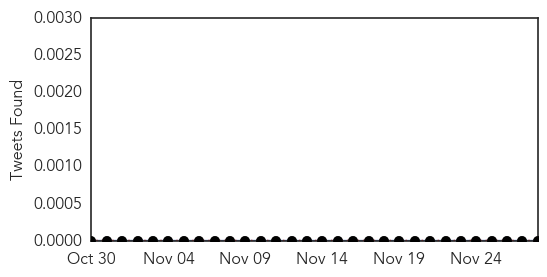
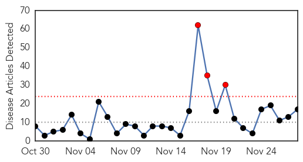
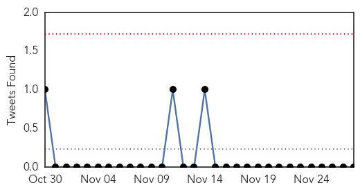
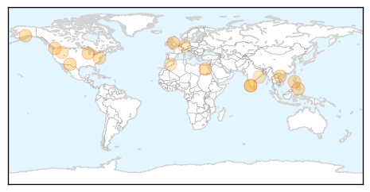
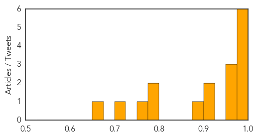

Hepatitis
30-Day Web Trend
2 alerts, 1 warnings

30-Day Twitter Trend
0 alerts, 0 warnings

Article Locations

Article Confidences

Top Articles:
-
No articles found for Nov 28, 2014
Top Tweets:
-
No tweets found for Nov 28, 2014
Influenza
30-Day Web Trend
3 alerts, 0 warnings

30-Day Twitter Trend
0 alerts, 0 warnings

Article Locations
Article Confidences
Top Articles:
- 0.997
- Kerala bird flu identified as H5N1 strain
- 0.995
- How Dangerous is H5N1 Virus? Know Symptoms
- 0.993
- How to handle EV D-68, cold and flu season
- 0.991
- Sheboygan, world were struck by 1918 flu epidemic
- 0.982
- Juneau Empire - Alaska's Capital City Online Newspaper
- 0.981
- Nation on high alert for avian influenza A/H5N8
- 0.973
- Urgent call to parents as just one in five children eligible for free flu vaccine receives it
- 0.970
- How Flu Vaccines Can Impact Families
- 0.956
- Three People Dead And One Seriously Ill After Taking Novartis Flu Vaccine
- 0.925
- Philippines bans eating meat of dead horses over Nipah virus cases
- 0.911
- Philippines: Eating horse meat banned due to reported deaths
- 0.879
- How Flu Vaccines Can Impact Families Is Discussed in New Article from Community Health Center of Snohomish County
- 0.793
- Anti-bird flu drive under Central protocol: Minister
- 0.790
- Culling to be over in 3 days
- 0.766
- KBS World Radio
- 0.724
- Odisha on High Alert after Bird Flu Outbreak in Kerala
- 0.663
- Novartis flu vaccine suspended following Italian deaths
Top Tweets:
-
No tweets found for Nov 28, 2014